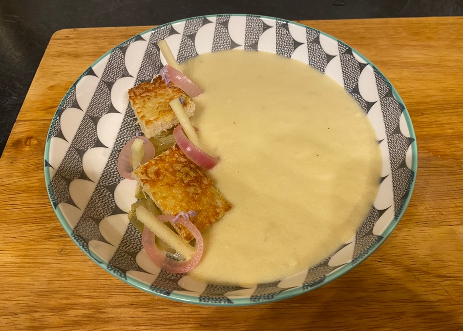

Pheasant and Bacon Casserole
Pan-Fried Hake with Mash Potatoes, Roast Asparagus, and Wild Garlic Pesto
Slow Roasted Beef

Lemon Possets

Baked Camembert with Garlic and Rosemary Tips

Chocolate Sponge

Globe Artichoke with a Lemon Butter Sauce
Sirloin Steak

Raspberry Tart with a Pistachio Crust
Lancashire Hotpot

Onion Soup with Cheesey Crutons and Pickled Shallots